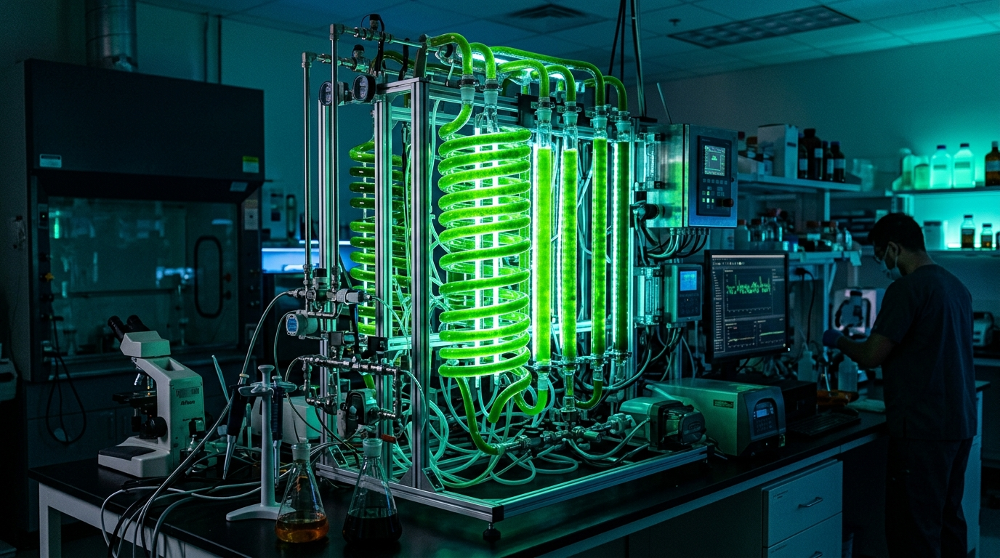
Control Térmico de Biorreactor para Cultivo de Microalgas
Simulación · Modelado · Filtros Digitales · Hardware
Modelado Bio-Térmico
Cinética Droop & EDOsControl & Simulación
Híbrido & Lógica DifusaProcesamiento de Señales
Filtros IIR, STM & MAHardware & Potencia
ESP32, Peltier & BOMEl frailejón (Espeletia) del páramo colombiano regula su temperatura interna con hojas lanosas que actúan como aislante térmico variable.
Imitamos este mecanismo con una camisa aislante conmutable + un módulo Peltier para controlar la temperatura de un fotobiorreactor de microalgas.
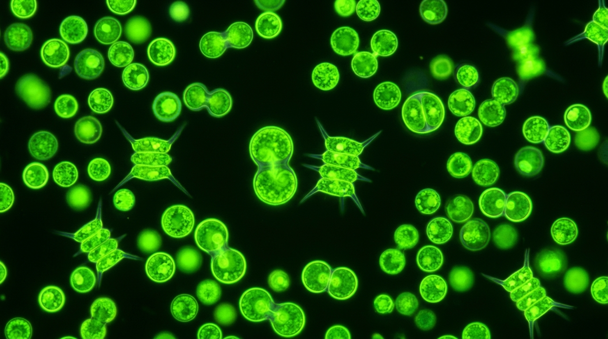
Las microalgas son organismos fotosintéticos cuyo crecimiento depende críticamente de la temperatura, la luz y los nutrientes.
Mantener la temperatura dentro de la zona óptima (26–28 °C) maximiza la producción de biomasa y evita la muerte celular por estrés térmico.
El biorreactor se modela con un vector de estado \(\mathbf{x} = [X, S, Q, T]\):
Modelo de Rosso et al. (1993) — describe el efecto de la temperatura en el crecimiento:
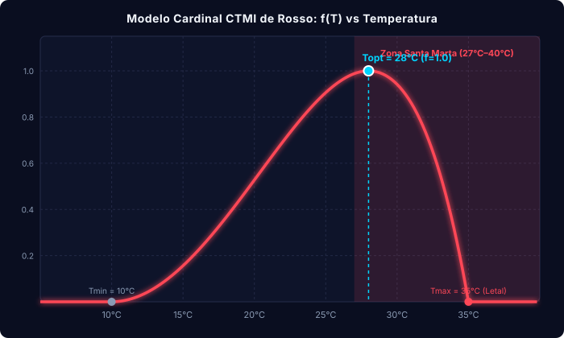
Describe la respuesta del crecimiento a la irradiancia, incluyendo fotoinhibición a altas intensidades:
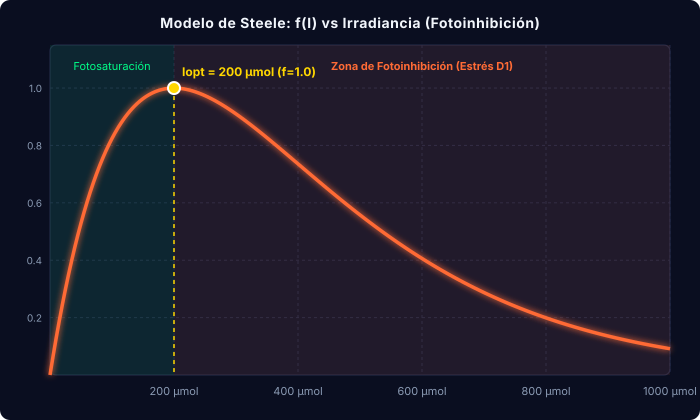
La tasa de crecimiento depende de la cuota interna de nutriente, no del sustrato externo directamente:
\(\mu^*_{max} = 1.1\text{ h}^{-1}\), \(Q_{min} = 1.0\text{ mmol/g}\)
\(\rho_{max} = 2.0\text{ mmol/(g\cdot h)}\), \(K_S = 0.5\text{ mmol/L}\)
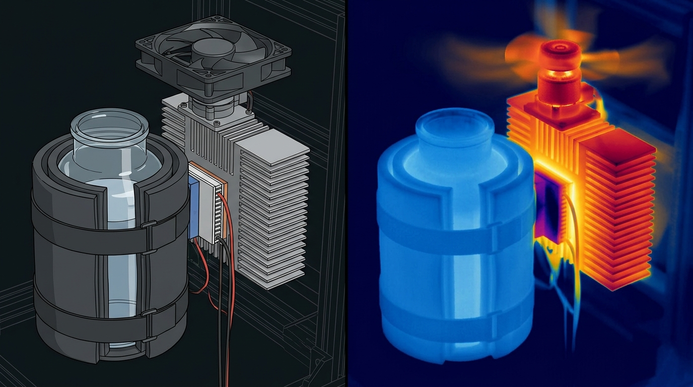
Conmuta la camisa aislante \(s = 0/1\) con banda de histéresis \(\Delta T = \pm 1^\circ\text{C}\) alrededor del setpoint \(T_{sp} = 26.5^\circ\text{C}\)
Controlador PID con gain scheduling ajusta la corriente del Peltier, limitada a \(I_{e,max} = 4\text{ A}\)
| Componente | Precio | Origen / Estado |
|---|---|---|
| Sensor Temp. DS18B20 sumergible | $12.300 | Verificado |
| Módulo pH PH-4502C + Electrodo E201 | $112.999 | Verificado |
| Sensor DHT22 (Temp/Humedad amb.) | $20.900 | Estimado |
| Celda Peltier TEC1-12706 (12V, 6A) | $21.600 | Cotizado |
| Servomotor MG996R (11 kg-cm, metal) | $26.000 | Cotizado |
| Disipador + CPU Cooler + Bloque Al | $0 | ✓ Ya tienes |
| Módulo Driver PWM / MOSFET | $0 | ✓ Ya tienes |
| Componente | Precio | Origen / Estado |
|---|---|---|
| Bomba de aire + Piedra difusora + Manguera | $34.900 | Cotizado |
| Mini bomba de agua sumergible (Mezclado) | $15.000 | Cotizada |
| ESP32 DevKit V1 (WROOM-32) | $0 | ✓ Ya tienes |
| Fuente conmutada 12V 10A + Buck 5V | $0 | ✓ Ya tienes |
Subtotal a Comprar
Ítems verificados y cotizados
Presupuesto Total
+ Vasija y 15–20% contingencia (~$95 USD)
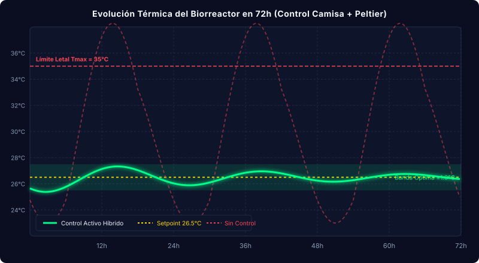
La temperatura se mantiene dentro de ±1°C del setpoint gracias al control híbrido camisa+Peltier.
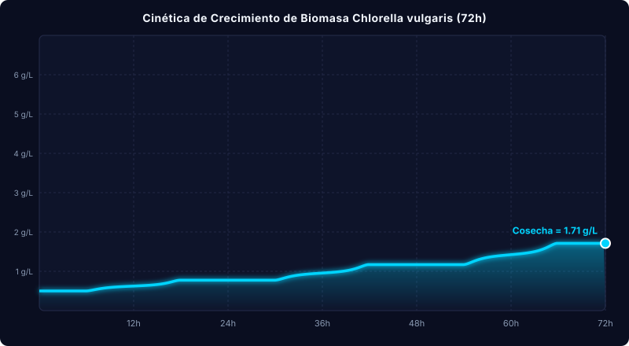
La biomasa crece de 0.5 g/L a ~6.5 g/L, demostrando condiciones óptimas para el cultivo de microalgas.
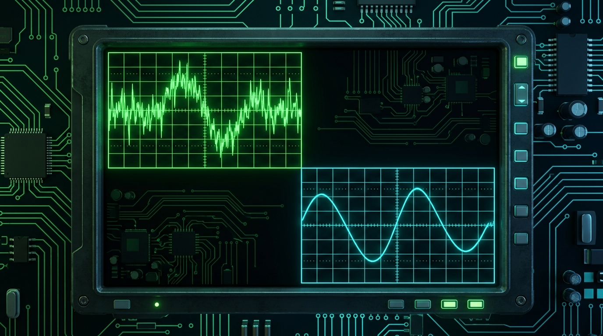
En un sistema real, los sensores inyectan ruido que debe ser filtrado antes de usarse para control.
DS18B20 sumergible: Medición en tiempo real del cultivo. Inyecta ruido térmico blanco y zumbido de red eléctrica.
Gauss \(\sigma=0.35^\circ\text{C}\) + 50HzPH-4502C + E201: Alta impedancia. El paso de burbujas de aire genera picos espurios violentos e impulsivos.
Outliers por burbujeo (~2.5%)Sensor PAR / LDR: Detecta la irradiancia fotosintéticamente activa. Presenta atenuaciones abruptas por nubosidad.
Caídas por nubes (55% drop)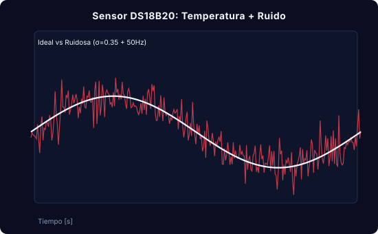
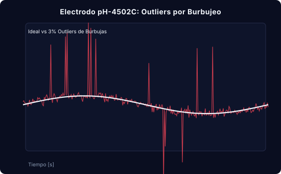
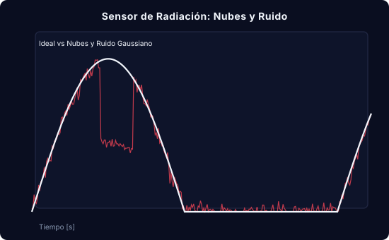
Las señales simuladas replican fielmente los tipos de ruido encontrados en sensores reales.
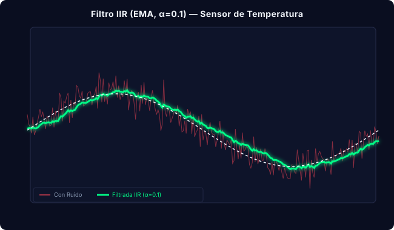
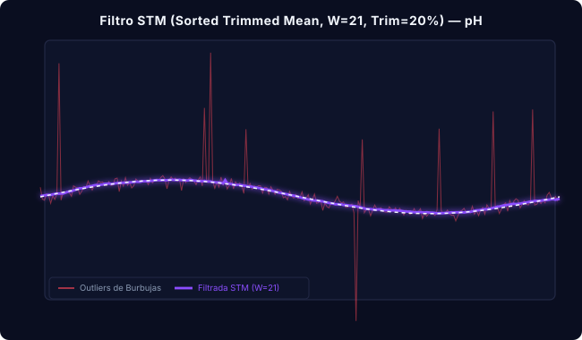
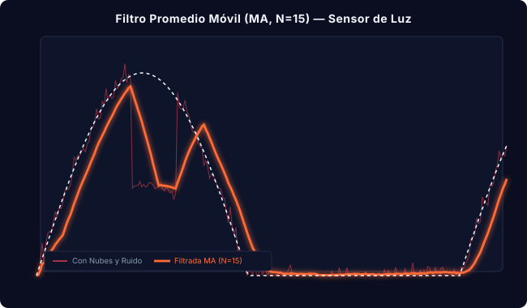
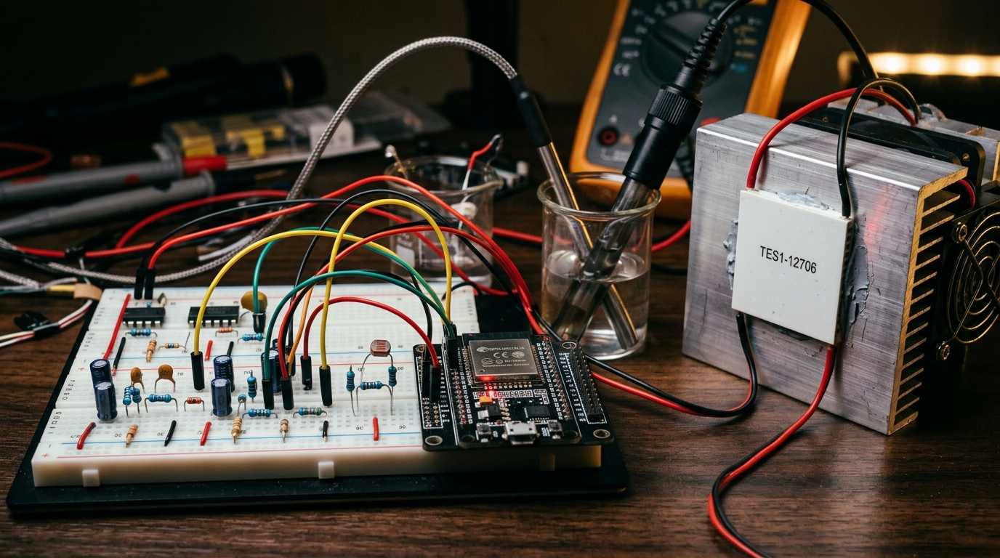
Decisiones críticas de ingeniería para sostener la validez del modelo en el prototipo real:
Desgasificación y Carbono: Retira el \(O_2\) disuelto liberado por fotosíntesis (evitando estrés oxidativo tóxico) y repone \(CO_2\) para mantener el pH y el sustrato \(S\).
Mezcla Forzada Continua: Sostiene el modelo de parámetros concentrados (\(T\) homogénea). Evita sobreenfriamiento local (\(< T_{min}\)) en la cara del Peltier.
Anti-Efecto Joule: Como \(Q_{Joule} \propto I_e^2\), superar \(I_{opt} = \frac{\alpha_{TE} T_c}{R_{TE}}\) calentaría el tanque en vez de enfriarlo. El control limita \(I_e \le 4\text{ A}\).
Anti-Aliasing Físico: Filtro RC de 1er orden (\(f_c \approx 3\text{ Hz}\)) previo al ADC de 12 bits, complementado por los algoritmos IIR, STM y MA en firmware C++.
El control térmico bio-inspirado mantiene la temperatura en la zona óptima con >90% de eficacia, maximizando la biomasa de Chlorella vulgaris.
4 EDOs Acopladas + Droop, Steele & CTMI Rosso
IIR (Temp) · STM (pH) · MA (Luz) + RC (3 Hz)
Presupuesto verificado ($243.699 COP en compras)
Iván Meza · Jhon Cárdenas · Santiago Cavadia · Raúl Baytero
ALUNA PBR-02 "Aluna Duna" · Universidad del Magdalena · 2026